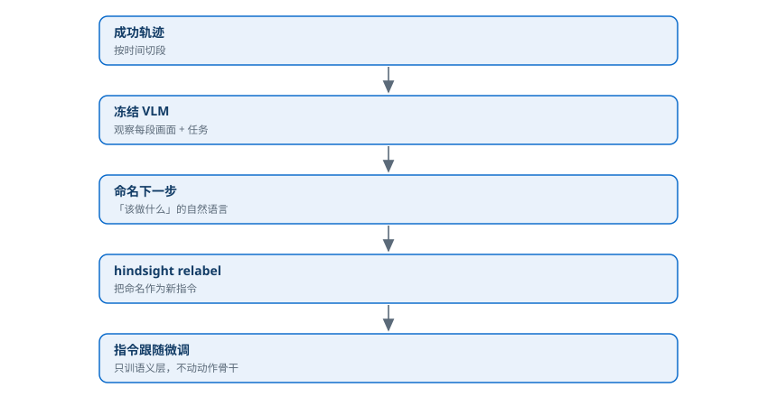

冻结 VLM 把成功轨迹切段命名「下一步」· hindsight relabel · 只训指令跟随
机器人失败常因「不知道该干哪一步」而非「不会动」。CoachSI 用冻结 VLM 给成功轨迹的每一段命名下一步，作为新的指令监督；动作骨干不动，只补语义接地。
| 项 | 值 |
|---|---|
| 输入 | 冻结 VLM、成功轨迹、原任务指令 |
| 输出 | 带「下一步」标签的轨迹 |
| 训练 | 指令跟随；动作骨干冻结 |
| 结果 | 长程未见场景 47.4→59.3（论文自评） |

物理：把「动作」与「意图」对齐；模型学会「当前该做哪一步」，而不只是模仿轨迹。
物理：VLM 给第 j 段命名「下一步」。
物理：用命名后的指令作为条件重训；物理：补语义接地。
依 CoachSI 摘要重建；无公开代码。
def coach_relabel(traj, vlm, task):
# 物理：VLM 把成功轨迹命名成「下一步」
steps = [vlm.describe(seg.frames, task, "next step?") for seg in segment(traj)]
return [(seg.obs, seg.action, s) for seg, s in zip(segment(traj), steps)]
def coach_finetune(policy, relabeled):
# 物理：只训指令跟随，动作骨干冻结
for obs, a, step in relabeled:
loss = -logp(policy, a, cond=(obs, step))
policy.semantic_head.update(loss)返回 方法精读 Wiki 索引 ｜ 博客：VLA/WAM 的 RL 后训练实现版